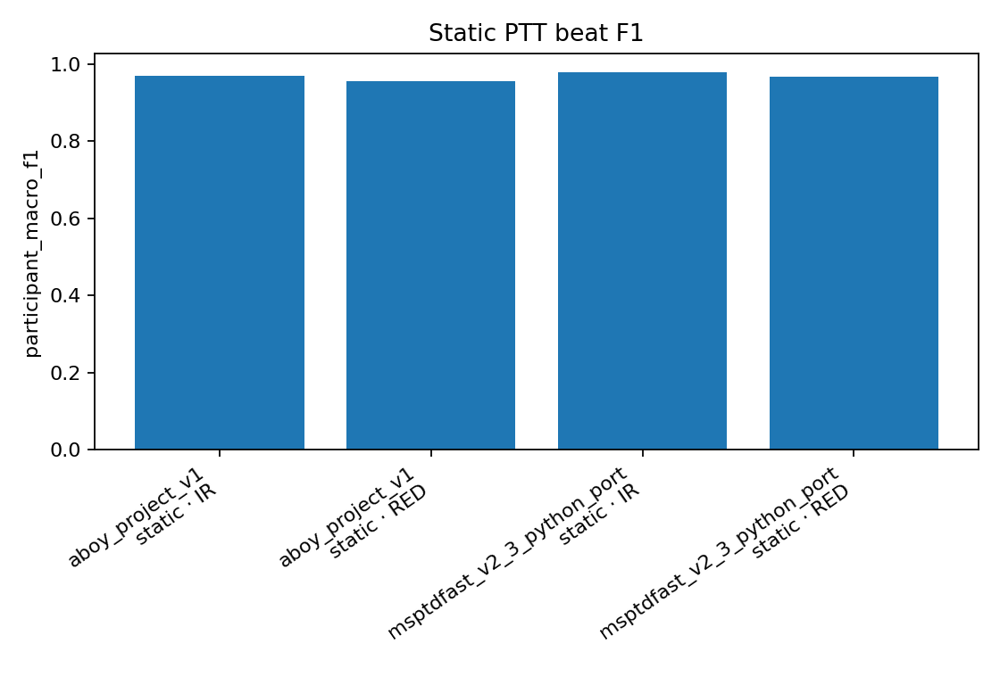
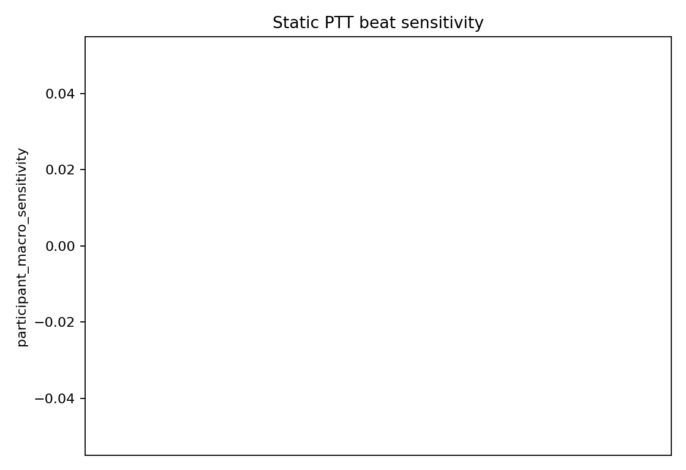
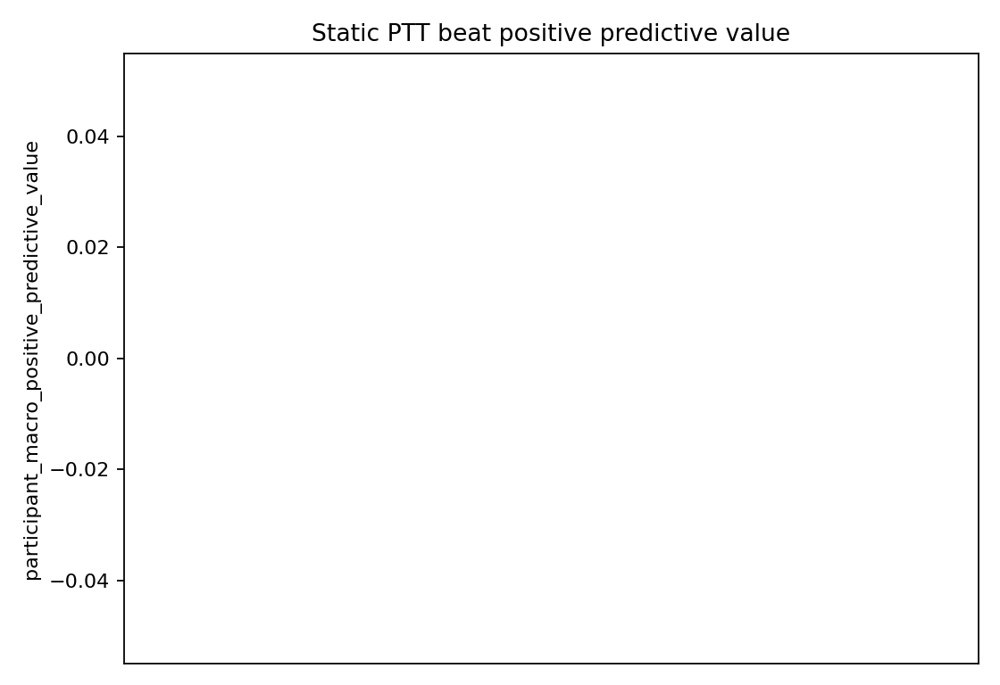
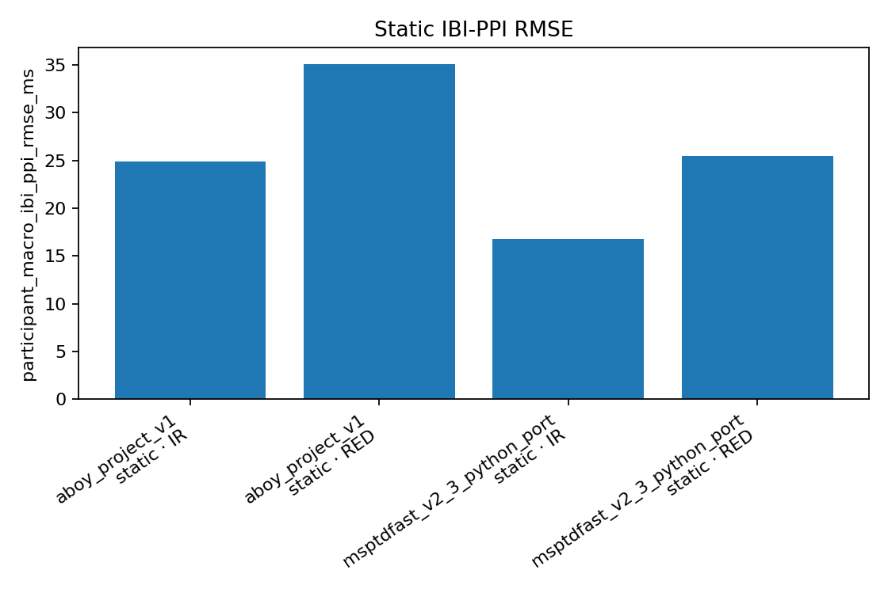
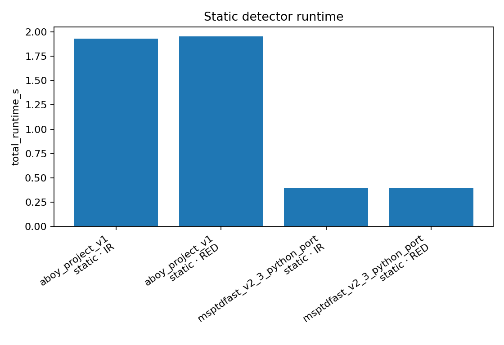

Status: passed
The identical Markdown table is in TEST_COMPONENTS.md. Input data are named directly rather than represented by hashes.
| algorithm_kernel_description | algorithm_references | component_role | execution_state | fixed_parameters | input_data | model_reporter_extension_id | module_id | participating_cases | reporter_profile_id |
|---|---|---|---|---|---|---|---|---|---|
| Persisted dataset_adapter contract; detailed values remain in the component input and fixed-parameter fields. | Project component-role audit binding: dataset_adapter; no separate external literature source claimed | dataset_adapter | enabled | {"activities":["sit","walk","run"],"dataset_id":"ptt_ppg_1_1_0_local","distal_channels":{"IR":"pleth_2","RED":"pleth_1"},"ecg_peak_annotation_column":"peaks","participant_count":22,"record_count":66,"root":"physionet.org/files/pulse-transit-time-ppg/1.1.0","selected_activity":"sit","selected_record_count":22} | {"activities":["sit","walk","run"],"channels":{"IR":"pleth_2","RED":"pleth_1"},"dataset_id":"ptt_ppg_1_1_0_local","dataset_root":"physionet.org/files/pulse-transit-time-ppg/1.1.0","ecg_peak_annotation_column":"peaks","participants":22,"pipeline_fs_hz":400.0,"records":66,"source_fs_hz":500.0} | audit_provenance_v1 | ptt_ppg_1_1_0_local | all | audit_provenance_v1 |
| Historical shared-preprocessing Aboy-family project detector. | Historical project adaptation; algorithm family: Aboy et al. (2005), DOI:10.1109/TBME.2005.855725 | peak_detector | executed | {"adaptive_bandpass_hz":"0.5 to min(8,max(1.5,3*(1+HRI)))","algorithm_id":"aboy_project_v1","bandpass_order":2,"block_s":10.0,"display_name":"aboy_project_v1","implementation":"ppg_frailty.peaks.aboy_project","initial_hri":0.0,"input_preprocessing":"shared repaired PPG then shared 0.2-8 Hz analysis filter","mad_limit":4.0,"mad_scale":1.4826,"prominence_fraction":0.25,"pulse_rate_bpm":[35.0,210.0],"registered_module_id":"aboy_project_v1","role":"current_project_reference"} | {"activities":["sit","walk","run"],"channels":["RED","IR"],"dataset_id":"ptt_ppg_1_1_0_local","dataset_root":"physionet.org/files/pulse-transit-time-ppg/1.1.0","ecg_peak_annotation_column":"peaks","input_view":null,"participants":22,"pipeline_fs_hz":400.0,"records":66,"scoring_windows_s":60.0,"selected_activity":"sit","source_fs_hz":500.0} | audit_provenance_v1 | aboy_project_v1 | PTT sit static peak ablation | beat_detector_legacy_persisted_v1 |
| Equation-level Python port of MSPTDfast (v.2); no bitwise MATLAB-parity claim. | Charlton et al. (2025), MSPTDfast (v.2), DOI:10.1088/1361-6579/adb89e | peak_detector | executed | {"algorithm_id":"msptdfast_v2_3_python_port","display_name":"msptdfast_v2_3_python_port","implementation":"ppg_frailty.quality.stage5_pre.detect_msptdfast_v2","parameters":{"minimum_heart_rate_bpm":30.0,"overlap_fraction":0.2,"target_downsample_hz":20.0,"window_s":6.0},"parity_status":"equation_level_port_not_bitwise_matlab_validated","registered_module_id":"msptdfast_v2_3_python_port","role":"paper_method_comparator"} | {"activities":["sit","walk","run"],"channels":["RED","IR"],"dataset_id":"ptt_ppg_1_1_0_local","dataset_root":"physionet.org/files/pulse-transit-time-ppg/1.1.0","ecg_peak_annotation_column":"peaks","input_view":null,"participants":22,"pipeline_fs_hz":400.0,"records":66,"scoring_windows_s":60.0,"selected_activity":"sit","source_fs_hz":500.0} | audit_provenance_v1 | msptdfast_v2_3_python_port | PTT sit static peak ablation | beat_detector_legacy_persisted_v1 |
| Persisted peak_validation contract; detailed values remain in the component input and fixed-parameter fields. | Project component-role audit binding: peak_validation; no separate external literature source claimed | peak_validation | executed | {"aggregation":"per_record_then_equal_participant_then_equal_wavelength_reporting","alignment":"paper_toolbox_style_lag_search_in_consecutive_time_windows","beat_tolerance_s":0.2,"efficiency_metric":"execution_time_as_fraction_of_signal_duration","lag_step_s":0.02,"lag_window_s":60.0,"max_lag_s":10.0,"primary_metrics":["participant_macro_f1","sensitivity","positive_predictive_value"],"reference":"synchronized_manually_verified_ecg_peak_annotations","secondary_delay_invariant_metrics":["participant_macro_ibi_ppi_rmse_ms","ibi_ppi_mae_ms"],"statistical_scope":"paired_within_participant_algorithm_comparison_no_model_training"} | {"annotation_column":"peaks","predictions":"detected PPG pulse times","reference":"synchronized_manually_verified_ecg_peak_annotations"} | audit_provenance_v1 | paper_toolbox_style_lag_search_in_consecutive_time_windows | PTT sit static peak ablation | beat_detector_legacy_persisted_v1 |
See REPORT_METHODS.md. Profiles are presentation-only.
| algorithm_summary | changes_training_or_predictions | limitations | literature | module_references | participating_components | presentation_only | profile_id | profile_kind | required_figures | required_tables | statistical_methods | title |
|---|---|---|---|---|---|---|---|---|---|---|---|---|
| Persisted resolved configuration, input data, seeds, splits, status and artifact inventory are projected without changing the experiment. | False | () | () | ['Charlton et al. (2025), MSPTDfast (v.2), DOI:10.1088/1361-6579/adb89e', 'Historical project adaptation; algorithm family: Aboy et al. (2005), DOI:10.1109/TBME.2005.855725', 'Project component-role audit binding: dataset_adapter; no separate external literature source claimed', 'Project component-role audit binding: peak_validation; no separate external literature source claimed'] | ['dataset_adapter:ptt_ppg_1_1_0_local', 'peak_detector:aboy_project_v1', 'peak_detector:msptdfast_v2_3_python_port', 'peak_validation:paper_toolbox_style_lag_search_in_consecutive_time_windows'] | True | audit_provenance_v1 | endpoint_or_module | () | ('test_components', 'reproducibility_summary') | () | Configuration and provenance audit |
| Historical detector outputs are regenerated only with the lag window, beat tolerance, aggregation and metrics persisted in that run's resolved_plan.yaml; the later 300 s/±150 ms contract is not back-applied. | False | ('Do not pool this profile with current-contract 300 s/±150 ms recording-level results.',) | ('Current comparison paper retained for context only: Charlton et al. (2025), DOI:10.1088/1361-6579/adb89e',) | ['Charlton et al. (2025), MSPTDfast (v.2), DOI:10.1088/1361-6579/adb89e', 'Historical project adaptation; algorithm family: Aboy et al. (2005), DOI:10.1109/TBME.2005.855725', 'Project component-role audit binding: peak_validation; no separate external literature source claimed'] | ['peak_detector:aboy_project_v1', 'peak_detector:msptdfast_v2_3_python_port', 'peak_validation:paper_toolbox_style_lag_search_in_consecutive_time_windows'] | True | beat_detector_legacy_persisted_v1 | endpoint_or_module | ('static_peak_detector_f1', 'static_peak_detector_sensitivity', 'static_peak_detector_ppv', 'static_peak_detector_interval_rmse', 'static_peak_detector_runtime') | ('static_peak_detector_summary',) | ('Exact historical validation settings are displayed from resolved_plan.yaml.', 'Historical summaries remain historical evidence and are not relabeled as current-contract results.') | Historical PPG beat-detector report |
P values are null-hypothesis tail probabilities, not posterior confidence. See RESULT_INTERPRETATION.md.
| angle | confidence | finding | leading_or_selected_case | selection_effect |
|---|---|---|---|---|
| beat_detection_accuracy | historical_contract_not_poolable_with_v3 | Highest historical participant-macro F1 under persisted legacy validation: 97.8% on channel IR. | msptdfast_v2_3_python_port | manual_default_review_only |
| statistical_comparison | not_available | No current-contract recording-level corrected P-value family is available. | None | none_automatic |
| activity_group | algorithm_or_reducer | channel | participant_count | participant_macro_f1 | participant_macro_ibi_ppi_rmse_ms | segment_count | total_runtime_s |
|---|---|---|---|---|---|---|---|
| static | aboy_project_v1 | IR | 22 | 0.9678856748506576 | 24.848360018965128 | 198 | 1.9318563170963898 |
| static | aboy_project_v1 | RED | 22 | 0.9559098959265971 | 35.0957617208711 | 198 | 1.9547193309408613 |
| static | msptdfast_v2_3_python_port | IR | 22 | 0.9784641356233297 | 16.757007954683708 | 198 | 0.39543810294708237 |
| static | msptdfast_v2_3_python_port | RED | 22 | 0.9661126884492686 | 25.48290823570446 | 198 | 0.393930005870061 |
This historical report preserves its resolved validation contract: alignment=`paper_toolbox_style_lag_search_in_consecutive_time_windows`, lag window=60 s, beat tolerance=±200 ms, and aggregation=`per_record_then_equal_participant_then_equal_wavelength_reporting`. The later 300 s/±150 ms recording-level contract is not back-applied.
N/A
This historical resolved plan did not register the later recording-level Wilcoxon/Holm-Sidak comparison, so no such inferential claim is added during report regeneration.




